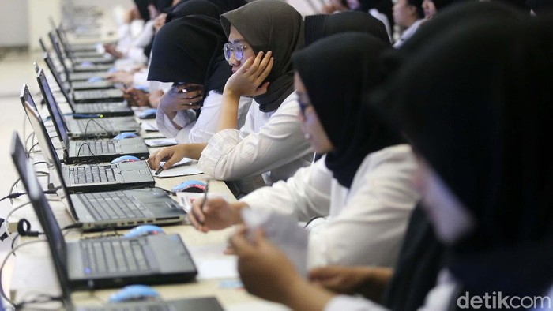

Kesaksian Kades soal Nasib Pekerja di Pabrik Esemka, Ternyata Oh Ternyata

Jakarta - Esemka kembali mendapat sorotan. Perkaranya, ada pemuda
asal Solo, Jawa Tengah, yang melayangkan gugatan ke pengadilan. Lantas, bagaimana
kondisi terkini pabrik Esemka di Boyolali? Masihkah ada pekerja yang bertugas di sana?
Kemarin (9/4), tim detikJateng baru saja mengunjungi pabrik Esemka yang bertempat di Desa
Demangan, Kecamatan Sambi, Kabupaten Boyolali. Namun, ketika itu, manajemen Esemka tak bisa ditemui.
Tim detikJateng akhirnya menemui Rosyid Setyawan selaku Kepala Desa Demangan. Pada kesempatan itu,
sosok tersebut bicara banyak mengenai kondisi terkini pabrik Esemka.
Rosyid mengklaim, hingga sekarang, masih ada karyawan yang bekerja di pabrik Esemka. Bahkan, kata dia,
tak sedikit yang merupakan warganya sendiri.
"Jadi terkait dengan eksistensi pabrik Esemka yang saya tahu ya seperti itu, masih ada karyawan. Kalau
di dalamnya seperti apa saya juga tidak tahu, karena kami hanya pemerintah desa, yang komitmennya adalah
tanah disewa," kata Rosyid Setyawan, dikutip dari detikJateng, Kamis (10/4).
Dikemukakan pula, ada puluhan warga Demangan yang menjadi karyawan di pabrik Esemka. Sampai sekarang juga
masih bekerja semua. Gaji karyawan juga dibayar sesuai komitmen yang dibuat dan belum pernah ada aduan ke
pihaknya dari warganya yang menjadi karyawan pabrik Esemka, terkait keterlambatan gaji.
"Kalau eksistensi sejauh ini ya aktivitas masih ada, cuma apa yang terjadi di dalam saya memang tidak begitu
paham. Kalau karyawan yang ada di situ setahu saya, kurang lebih ya 100 sampai 150," sambungnya.
Menurut dia, PT Solo Manufaktur Kreasi sebagai perusahaan menyewa tanah kas Desa Demangan selama 30 tahun
untuk produksi mobil Esemka. Luas lahan yang disewa kurang lebih 11 hektar. "Nilainya setiap tahun itu yang
dulu, Rp 114 juta. Lahan semuanya itu. Terus baru 2 tahun terakhir ini, ada kenaikan menjadi Rp 134 juta. Dibayarkan
setiap bulan Agustus," kata dia. Ditambahkan, terkait pembayaran uang sewa itu selama ini tidak pernah ada keterlambatan.
Diberitakan sebelumnya, seorang warga Solo menggugat Presiden RI ke-7 Joko Widodo atau Jokowi dan PT SMK. Dia mengaku
kesulitan membeli mobil tersebut. Penggugat menganggap Jokowi wanprestasi lantaran tak mampu merealisasikan program mobil nasional.
'Ratu Voli' Korea Apresiasi Megawati Hangestri: Dia Menakutkan!
Incheon - Legenda voli Korea Selatan, Kim Yeon-koung, mengapresiasi performa Megawati Hangestri
Pertiwi. Bintang Pink Spiders itu mengakui Megatron gacor di lapangan.
Pink Spiders keluar sebagai kampiun Liga Voli Putri Korea, Selasa (8/4/2025) malam WIB.
Skuad asuhan Marcello Abbondanza juara usai mengalahkan Red Sparks 3-2 dalam 5 game.
Pada pertandingan kelima yang berlangsung di Samsan World Gymnasium, Incheon, Pink Spiders
menang 26-24, 26-24, 24-26, 23-25, dang 15-13. Kim Yeon-koung jadi pemain Pink Spiders yang
yang menyumbang poin terbanyak (34 poin).
Gelar juara Liga Voli Putri Korea jadi kado manis buat Kim Yeon-koung. Pemain yang dijuluki 'Ratu Voli'
ini mengakhiri kariernya dengan gelar juara setelah dalam 3 final terakhir harus puas jadi runner-up.
Kim Yeon-koung sudah berkarier selama 21 tahun dalam dunia voli dan menjadi kebanggaan Korea Selatan. Pevoli
37 tahun ini berhasil mempersembahkan medali emas Asian Games 2014 buat Negeri Gingseng, serta jadi pemain Asia
pertama yang meraih MVP di kompetisi Eropa (CEV Women's Champions League) bersama klub Turki, Fenerbahce.
Gelar juara Liga Voli Putri Korea musim ini diakui Kim Yeon-koung amat sulit diraih. Dia terutama memuji performa
bintang Red Sparks, Megawati Hangestri Pertiwi, yang sukses meraih poin terbanyak (37 poin) pada partai pamungkas.
"Dia telah tumbuh menjadi pemain yang benar-benar menakutkan dan telah menaikkan level bola voli kami," kata Kim usai
final Liga Voli Putri Korea, dilansir dari Chosun Ilbo. "Di sisi lain, saya bertanya-tanya seberapa menakutkannya seandainya
saya bertemu dengannya sebagai anggota tim nasional Indonesia." ujarnya soal Megawati.
Ini Alasan 714 CPNS Kemendiktisaintek Mundur
Jakarta - Kementerian Pendidikan Tinggi, Sains dan Teknologi (Kemendiktisaintek)
membeberkan sejumlah alasan di balik langkah pengunduran diri sebanyak 714 orang Calon Pegawai
Negeri Sipil (CPNS) dosen 2024 di kementeriannya. Alasannya beragam, salah satunya ialah menyangkut
ekspektasi terkait lokasi penempatan CPNS nantinya.
Kabar menyangkut pengunduran diri 714 peserta tersebut mulanya diketahui publik lewat unggahan salah
satu akun media sosial X, @ardi*****. Disebutkan bahwa ada 653 peserta mengundurkan diri dan 61 peserta
yang dianggap mengundurkan diri karena tidak mengisi daftar riwayat hidup.
Sekretaris Jenderal (Sekjen) Kemendiktisaintek Togar Mangihut Simatupang mengonfirmasi kebenaran kabar
tersebut. Katanya, salah satu alasan pengunduran diri tersebut ialah menyangkut ekspektasi terkait lokasi penugasan.
"Penugasan penempatan yang berbeda dengan ekspektasi, berkaitan dengan alasan lokasi, alasan kesehatan,
alasan keluarga, dan alasan PT," terang Sekretaris Jenderal (Sekjen) Kemendiktisaintek Togar Mangihut Simatupang
saat dihubungi detikcom, Selasa (15/4/2025).
Togar mengatakan, tidak ada sanksi secara formal yang diberlakukan untuk para peserta yang mengundurkan diri ini.
Namun demikian, ada kemungkinan bahwa para peserta ini bisa diblokir dari CPNS yang akan datang.
"Sanksi secara formal tidak didefinisikan. Tetapi karena sudah merugikan proses yang menutup ribuan calon lain yang
sudah siap sedia ditempatkan di mana saja dan ketidakmauan ditempatkan di mana pun di seluruh Indonesia, ada kemungkinan
akan diblok," jelasnya lagi. Pemberitahuan tentang pengunduran diri 714 peserta CPNS ini tercantum dalam Pengumuman
Nomor: 5590/A.A3//KP.01.01/2025 tentang pembatalan kelulusan pada seleksi penerimaan CPNS Kemendiktisaintek. Dengan langkah
pengunduran diri ini, para CPNS dibatalkan status kelulusannya dan dinyatakan Tidak Memenuhi Syarat.
Adapun daftar peserta yang mengundurkan diri ini dapat dilihat melalui laman resmi Kemendiktsaintek https://casn.kemendikdasmen.go.id/.